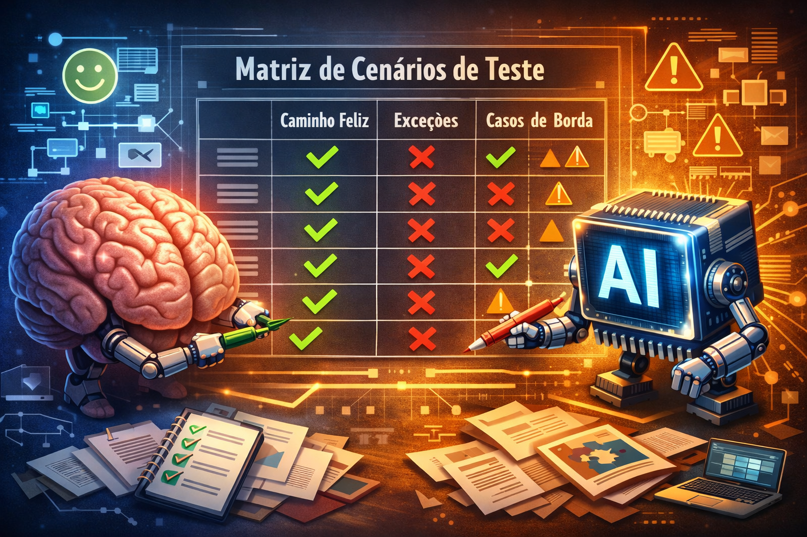

Nesse ano final de 2025 me levou a pensar em um ponto crucial para a qualidade: como garantir que nossos cenários de teste sejam realmente completos e previsíveis? Em 2025, com a complexidade dos sistemas e a velocidade das entregas, contar apenas com a intuição humana já não é suficiente. É aí que a IA generativa entra não como uma ferramenta de automação, mas como uma parceira estratégica na construção de confiança.
Sabe aquela sensação de que "algo importante pode ter ficado de fora" dos testes? Ou a frustração de encontrar um bug em produção em um fluxo que ninguém imaginou? A previsibilidade nos testes existe justamente para eliminar essas surpresas. E em 2025, ela é construída com código e com inteligência.

O que é previsibilidade nos testes (e por que ela é estratégica)
Previsibilidade significa que nossos cenários de teste antecipam com precisão o comportamento do sistema sob diversas condições, especialmente nas exceções e nos "cantos escuros" da aplicação. Sem ela, enfrentamos:
- Bugs em produção em fluxos não cobertos.
- Retrabalho constante nos ciclos de desenvolvimento.
- Falta de confiança nas releases, mesmo após a suíte de testes passar.
A IA generativa evoluiu. Ela não serve mais apenas para acelerar a escrita de cenários, mas para sistematicamente reduzir lacunas de cobertura. Seu papel é garantir que nenhum cenário crítico — como fluxos de exceção ou condições de borda — seja esquecido, aumentando diretamente a confiança no software que entregamos.
Do prompt ao cenário: 4 dicas práticas para usar a IA
1. Forneça contexto rico (Prompt Engineering)
A IA só é precisa se entender o domínio do negócio. Substitua comandos genéricos por prompts estruturados.
Exemplo prático:
Em vez de: "Crie testes para um carrinho de compras."
Use:
Tarefa: "Escreva cenários de teste em formato Gherkin (BDD) para a funcionalidade de cupom de desconto."
Restrições: "Considere cupons expirados, cupons de primeira compra, limite de uso por CPF, aplicação parcial no carrinho e combinação inválida com outras promoções."
Resultado: Cenários que vão muito além do "código válido aplica desconto", cobrindo regras de negócio complexas desde o início.
2. Use a técnica de "few-shot" para consistência
Garanta que novos cenários sigam o mesmo padrão e profundidade dos já validados pela equipe.
Como aplicar: Treine a IA fornecendo exemplos do seu padrão de escrita.
Exemplo 1: [Cole um cenário Gherkin de sucesso que você já tem]
Exemplo 2: [Cole um cenário de erro que seja bem modelado]
Instrução: Mantenha o mesmo nível de detalhe nos passos e na descrição dos dados de teste."
Isso mantém a previsibilidade e a consistência entre diferentes membros do time.
3. Peça identificação de "caminhos de exceção"
Nossa mente naturalmente foca no "caminho feliz". Use a IA para iluminar proativamente os pontos de falha.
Prompt-chave: "Analise este requisito: [cole o texto do requisito]. Liste 5 cenários de erro ou condições de borda não óbvias que poderiam quebrar o sistema ou gerar má experiência do usuário."
Essa prática é um antecipador de bugs, ajudando a equipe a pensar em tratamentos de erro antes mesmo da implementação.
4. Faça revisão automática de ambiguidade
Cenários ambíguos são a raiz dos testes instáveis (flaky tests). Use a IA como um revisor imparcial.
Solicitação: "Revise o seguinte cenário Gherkin e identifique: 1) Passos com linguagem subjetiva ou ambígua; 2) Pré-condições ausentes; 3) Dados de teste não explícitos que podem variar.
Cenário: [cole seu cenário aqui]"
Isso garante que seus cenários sejam executáveis e determinísticos, a base de uma automação robusta.
DoR, DoD e IA: O triângulo da qualidade previsível
Pensando nos conceitos que discutimos anteriormente, podemos integrar a IA ao nosso fluxo:
- No DoR (Definition of Ready): Um critério poderia ser: "Cenários de teste exploratórios (happy path e principais exceções) foram gerados e revisados com auxílio de IA?" Isso garante que a tarefa entra em desenvolvimento com uma visão mais completa dos riscos.
- No DoD (Definition of Done): Poderíamos incluir: "Os cenários de teste automatizados cobrem os caminhos de exceção identificados na etapa de planejamento (incluindo os sugeridos pela IA)?"
A IA não substitui a discussão e o acordo da equipe no DoR e DoD; ela os instrumentaliza com dados e perspectivas mais abrangentes.
Benefícios estratégicos
Adotar essa abordagem vai além do ganho tático de velocidade. Ela traz vantagens mensuráveis:
- Aumento de produtividade (>30%): Times reportam redução drástica no tempo de criação e manutenção de cenários, realocando esforços para atividades de maior valor, como testes exploratórios sessados.
- Redução de testes instáveis (Flaky Tests): Cenários claros, completos e deterministicamente descritos são a matéria-prima para automações estáveis.
- Democratização da qualidade: Com prompts bem estruturados, POs, desenvolvedores e QAs podem colaborar na geração de cenários, fortalecendo a cultura de Quality Ownership compartilhada.
A IA generativa é o parceiro cognitivo que estende nossa capacidade de prever o imprevisível. Ela transforma a qualidade de uma arte intuitiva em uma disciplina amplificada por dados.
Conclusão: Previsibilidade como diferencial competitivo
Em 2025 deixou claro, a qualidade é um imperativo de negócio. A IA generativa, quando guiada por uma abordagem intencional de engenharia de prompts, deixa de ser uma ferramenta auxiliar e se torna o núcleo de um processo de teste previsível, exaustivo e eficiente.
A jornada começa com um prompt melhor. Comece fornecendo contexto, treinando com exemplos, desafiando a IA a pensar nas falhas e refinando a clareza. O resultado será uma suíte de testes que não apenas cobre o que o sistema deve fazer, mas prevê com confiança como ele reagirá quando as coisas saírem do plano — que é, no fim das contas, onde a verdadeira confiança no software é construída.
Para se aprofundar, recomendo o Guia de Engenharia de Prompts da IBM (2025) e os casos práticos no blog da dti digital sobre aceleração de testes com IA.